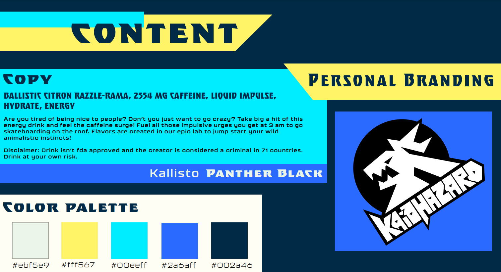

mar 2022 - apr 2022 <
Kaiohazard is a fictional energy drink. The label was designed in Adobe Illustrator, then placed on a can and rendered in Adobe Dimension.

The goal of Kaiohazard is to exude chaos and hyperactivity. The can features bright neon colors and sharp angles, and utilizes language meant to amp up the consumer. The logo was the first feature developed, with many possible iterations. The final logo ended up featuring a jackalope. The name is a combination of the creator's name, Kai, and biohazard.
The label was created in Adobe Illustrator, and then loaded into Adobe Dimension. In Dimension, a 3d can was used as a base, and the label was placed onto it. The drink was then rendered to imitate a real product in 3 dimensions. The project's purpose was to design a fictional product, from sketch to full rendering, with apt content on the label.